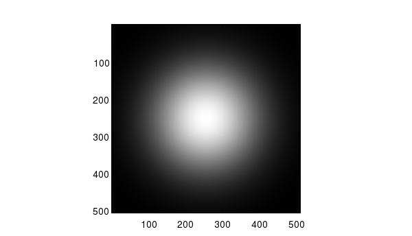

GRAY Gray Colormap
Section:
Handle-Based Graphics
Usage
Returns a gray colormap. The syntax for its use is
y = gray
Example
Here is an example of an image displayed with the
gray
colormap @> which results in the following image
